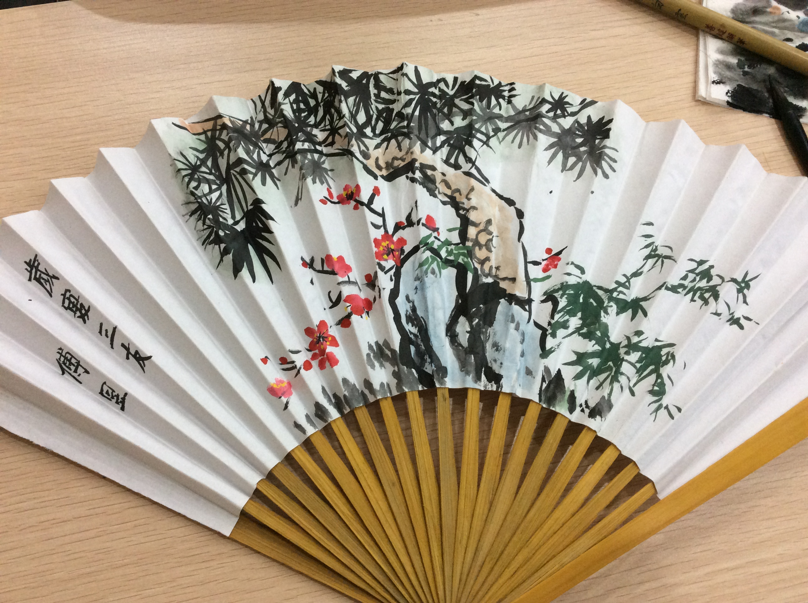

Fan Painting!
December 17, 2014Today I created my first Fan Painting, with the guide of our brilliant professor. The theme of fan painting is Chinese painting, which has three categories: Character, Mountain & Water and Flowers and Birds. This time I will draw "歲寒三友", which means three good friends in winter. Who are the plants you would think of in winter? I think of bamboo, plum and pine tree because every year, as the season progresses from autumn to winter, the days become progressively colder. While many plants and trees begin to wither away or shed their leaves, the pine, bamboo, and plum seem to do just the opposite with their surprising display of vitality. Indeed, this unique quality drew much attention of the ancient Chinese.
The origin of this term, 歲寒三友, is found as early as the Record of the Five-cloud Plum Cottage (五雲梅舍記) from The Clear Mountain Collection (霽山集) of literary writings by Lin Jingxi (林景熙, 1241-1310, a Song dynasty loyalist), “For his residence, earth was piled to form a hill and a hundred plum trees, which along with lofty pines and tall bamboo comprise the friends of winter, were planted (即其居累土為山，種梅百本，與喬松、脩篁為歲寒友).”
I realize I was soooooo focused that nothing is in my mind except pine, bamboo and plum. I enjoyed Chinese painting a lot!!!
Here you go, my final production! Not bad right!!!
